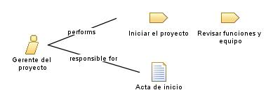

| Role: Gerente del proyecto |
| |
 |
| El gerente del proyecto se encarga de realizar las reuniones con los stakeholders, revisar el funcionamiento de la aplicacion y analisar el proyecto de software con el fin de dividir este en labores |
|
Relationships
 |
| Primary Performs |
|
| Modifies |
|
Main Description
| El gerente del proyecto es el rol encargado de analizar la informacion del proyecto que se va a realizar, asi mismo, se
encarga de mantener comunicacion con los stakeholders y realizar la distribucion de roles y tareas al equipo que
hace parte del proyecto. |
Staffing
| Skills | El gerente de proyecto debe tener una capacidad de comunicacion alta, puesto que es aquel que se comunica con los
interesados en el proyecto y con las demas partes del equipo. |
| Assignment Approaches | El gerente del proyecto se enfoca en la revision y analisis del proyecto, es decir, se encarga se analizar el
funcionamiento de este, asi como el correcto funcionamiento de este en su momento de implementacion. |
Key Considerations
El gerente del proyecto esta presente en todo el proceso de desarrollo el proyecto de software.
|
|